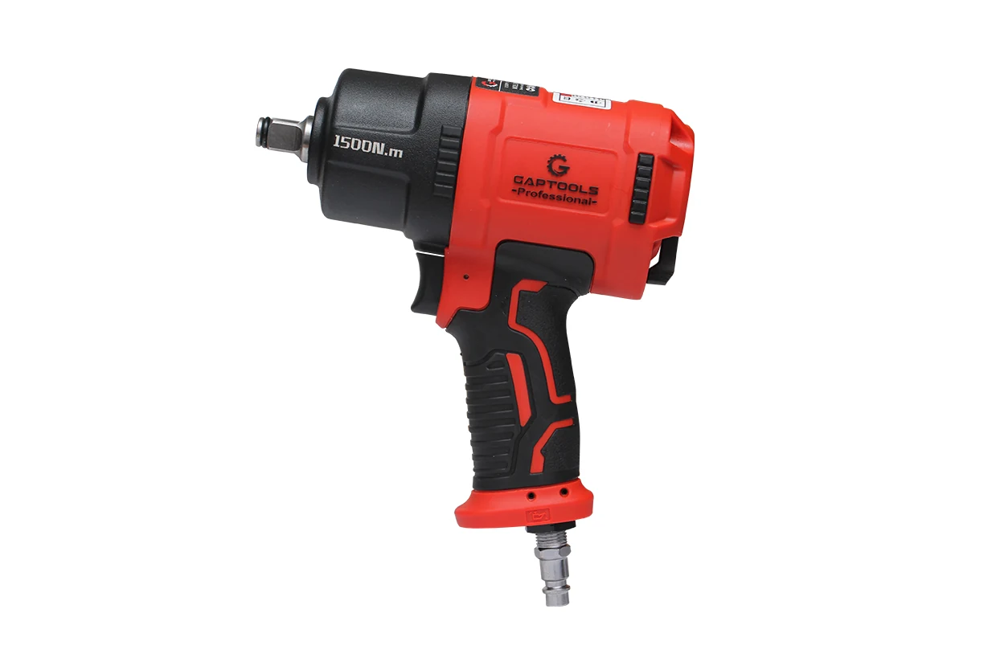

850 Nm 1/2 Darbeli Somun Sökme - GP 850
GP 850- 21 Volt/4.0 Ah
- Çift Batarya
- Çift Çekiçli
- Kömürsüz Motor
- Uzun Ömürlü Güçlü Akü
- Kare Ölçüsü (inc)
- Tork Gücü (Nm)
- Volt
| Yüksüz Hız | 2300/1900/1450 rpm |
|---|---|
| Ağırlık | 1.88 kg |
| Koli Adeti | 4 Adet |
| Kare Ölçüsü | 1/2 inç |
| Tork Gücü | 850 Nm |
| Voltaj | 21 V |
| Akü | 4.0 Ah/Li-ion |